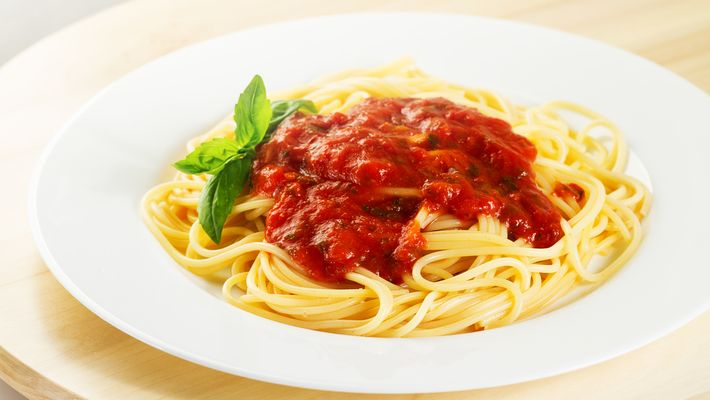

Macarrão ao Molho Vermelho

Sobre a receita
O espaguete é um bom acompanhamento de muitos pratos diferentes, embora possa ser servido simples.
Ingredientes
- 1/2 pacote de macarrão de seu gosto
- 3 tomates picados sem pele
- 1 cebola pequena picada
- 1 colher de extrato de tomate
- Pimenta-do-reino moída a seu gosto
- 1 pacotinho de tempero em póvermelho
- 1 colher de azeite de oliva extra virgem, ou azeite de seu gosto
Passo a Passo
- Coloque o macarrão em uma panela e cozinhe como de costume.
- Coloque 1 colher de azeite na panela em fogo alto e a cebola picada.
- Quando a cebola dourar, acrescente os tomates e mexa até que eles soltem água, depois disso, acrescente 1 colher de extrato de tomate e a pimenta-do-reino moída.
- Mexa até misturar tudo e reserve.
- Escorra o macarrão, coloque-o em um refratário, acrescente o molho e misture.